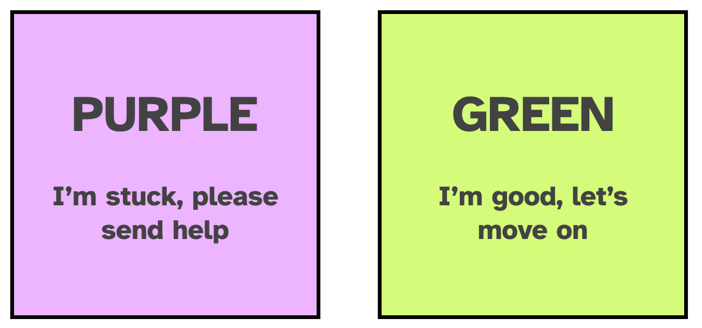

Introduction ✨
What the course will look like
We will work together through developing a package, and at various steps along the way we will take detours to examine tools, processes, and package structure.
The tools we’ll be using (RStudio + devtools, usethis, and friends) are designed to ‘get out of the way’ and enable a workflow that helps you focus on the code you are writing. We’ll be live coding together, and emphasizing these workflows and processes.
The core ideas in this course are taken from the R Packages book (Wickham and Bryan 2023) by Hadley Wickham and Jenny Bryan, now in its second edition. We basically follow the format of the “Whole Game” chapter, stepping through the key steps in making a package, with detours along the way to explore the main concepts in a bit more detail.
Course logistics
Code of Conduct
Please note that all participants at posit::conf(2023) and workshops must abide by the Code of Conduct. Everyone who comes to learn and enjoy the experience should feel welcome at posit::conf. Posit is committed to providing a professional, friendly and safe environment for all participants at its events, regardless of gender, sexual orientation, disability, race, ethnicity, religion, national origin or other protected class.
Schedule
| Time | Activity |
|---|---|
| 09:00 - 10:30 | What is a package? Package Structure and State |
| 10:30 - 11:00 | Coffee break |
| 11:00 - 12:30 | Package Creation and Metadata; Documentation |
| 12:30 - 13:30 | Lunch break |
| 13:30 - 15:00 | Testing; Dependencies |
| 15:00 - 15:30 | Coffee break |
| 15:30 - 17:00 | Continuous Integration; Package Website; Package Distribution |
Sticky notes

We will be using sticky notes to make sure everyone is getting what they need out of the course. Everyone will get two sticky notes of different colours (e.g., one red, one green) that we use as status flags. If someone has completed an exercise they put the green sticky note on their laptop; if they run into a problem and need help, put up the red one.
TAs
Day 1: Michele Peruzzi & Thomas Pedersen
Day 2: Nic Crane and Simon Couch
Note-taking
We will be using a private Discord channel for note-taking during the course. You will be given access before the workshop.